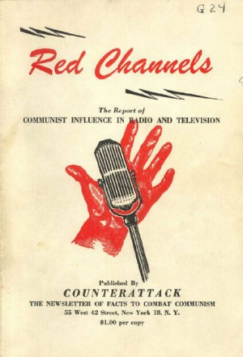
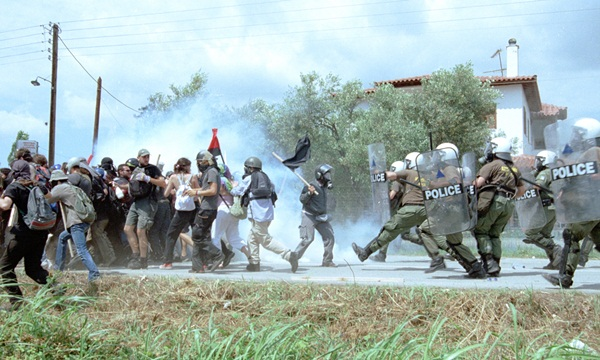

-
No More Séances: Interview with Red Channels
by Idiom October 18, 2010
Red Channels is a radical collective organizing screenings, discussions, and other open forums at venues throughout the city. Stephen Squibb discussed issues of appropriation, surrender, revolution and appropriation with the group over email; check their website or follow them on the Facebook for information about upcoming events.
Idiom: You define Red Channels as
[A] series of film and video screenings happening in community and cultural spaces in New York City. The emphasis is on rare and radical works, re-contextualized and discussed in an open forum.
and elsewhere write that
The organizing and outreach that happens within the Red Channels project is not simply for the sake of arts appreciation, or movie night, but to create a forum to ask the exact question of how “to find social meaning in our passion for films,” or perhaps, how to to use our passion for cinema to create social meaning.
There seems to be a tension between the desire for outreach, for organization, and the choice of cinema as the central conceit for these activities. Leaving aside, for the moment, the propaganda value of cinema’s reproducibility, the passivity required for its consumption could be seen as the antithesis of something like an activist or revolutionary subjectivity, a rehearsal for submission, if you will. (You approvingly quote Fanon that “Every spectator is a coward or a traitor.”) Can you speak a little about how you see Red Channels navigating this tension, between, on the one hand, the desire for a renewed commitment on the part of its audience, and, on the other, the quietus inherent in the reason for its gathering?
Red Channels: Yes, there is a tension between cinema and political organizing, but I’m not sure we’d go so far as to call that tension a contradiction. You’re right, there is a passivity required for consumption, but this is no more true for cinema than it is for reading a text, listening to a speech or lecture or panel, or any other form of information or knowledge transmission. At first you are a spectator, a consumer, and we’ll call this the thesis. But what we’ve tried to focus on is the discussion that happens next, which we can call the anti-thesis. It is here where things can happen. We’ve tried to provide an open and participatory forum, often organized horizontally, and with invited voices, respondents, co-presenting groups and representatives from social movements.

I sense you’re imagining our events as typical cinema séances, people sitting quietly in dark rooms, taking in a spectacle. We of course reject such situations, and the presentation of a superficially radical cinema in such classical, operatic, bourgeois museum settings is not what we’re doing. We come from a DIY tradition, we’re punks, so just as punk rejected the music industry and its spaces for exchange, we reject the film industry and its spaces, including museums and arthouses. The kinds of grassroots community exchanges of culture and dialogue we’re after exist wholly outside the world of classical cinema.
The reason for our audience’s gathering is the opposite of quietus, it’s participation. The screenings we’ve organized without open discussions after have been our most disappointing events. Giving the audience the space and opportunity to participate, to speak, to listen, is the most important and the most political part of our project. This is why we called the first issue of our online magazine Overcoming Silence. As you suggest, there is a presupposed silence in the consumption of culture, and this is what we have to overcome if we want our audience to commit to the political realities our screenings have addressed.
This could be done with any medium, or genre, or artform, but it isn’t. Most artists or curators present content, but don’t create a space for the audience to then respond to that content. The same goes for political presentation, in the form of speeches or lectures or panels. This one-sided presentation presupposes quietus, as you say, and we question the extent to which its audience can then commit to its politics. You might see participation in classrooms or reading groups, but these are contained, private exchanges. We’re after something both public and participatory. This is the rehearsal for revolution.
Idiom: You make a similar point elsewhere:
Radical content is not just “defanged” by a traditional form, but both radical form and radical content are defanged by a mainstream transmission.
Which I think is correct, but let’s talk a little bit about this form/content divide, as I think its still an open question for a lot of people. Do the works you screen tend towards radical content or radical form? Do you see patterns emerging between the context of production of a given work and its preference for intervening on a particular side of this divide?
RC: It might be true that the works we’ve screened have been more radical in content–in their analysis, ideology, and politics–than in their re-examinations of the mediums they were using to convey this material. But we’re probably less interested in the seeming divide between form and content, as aesthetic and cultural questions, than the political question of what it is to be “radical”.
As an artist or cultural worker, when you approach a certain subject, space, situation, how do you define what it is to engage radically with this content, what it is to represent this content radically. We can then look at the work produced and talk about its successes and failures, and try to learn from it.
We see patterns in the current cultural and media landscape where groups submit themselves to working with forms acceptable by the dominant industries and institutions. In so doing we wonder if the work can only be so radical as capitalism can absorb. But it’s not just about cultural products. We have to be both the radical form and the radical content.
Idiom: I’m always interested in the question of capitalism’s ability to absorb, to appropriate, and, by extension, to neuter radical production. On the one hand, I think this pattern is very demonstrably operative and destructive. On the other, I am skeptical of taking too long a view, as it seems that even if absorption or appropriation is the end point for certain radical practices or memes, a great deal of good can be accomplished in the moments, ever briefer, between their appearance and their absorption. Can you speak a little about this cycle? How do you see it at work in cinema? In cultural production more generally? Ought the goal to be to prolong resistance as long as possible? Or to accomplish what one can and then move on?
RC: The goal isn’t just radical production, but radical transformation. We should remind ourselves of that. As long as we’re simply producing, those products will be appropriated.
We try not to think about this cycle of, a. the appearance of a radical idea, and b. the presumption of its inevitable absorption. It sounds like a game which we’d rather not participate in. We should be creating more autonomous spaces for dialogue and exchange through our work and organizing.
We’re becoming less interested in cinema, which is good, because it should allow us to make better use of it. We are all entrenched in culture and media work, which has always been one of the most important spaces of resistance. But it’s not about la résistance pour la résistance. This again sounds like a game. It’s fashionable to claim yourself in opposition, but still enjoy the benefits and luxuries of capitalism, still live bourgeois lifestyles. Capitalism absorbs not just ideas but people. And not just people, but projects, groups, institutions. What we’d like to accomplish should be impossible to move on from.
Idiom: What would that look like, this impossibility?
The transformation of ourselves, the way we think, our social relations, the way we work and communicate, the way we live, cultivating networks and institutions both fluid and sustainable.
Metaphorically speaking, Red Channels shall increasingly function as a ‘flash mob’, by coordinating ourselves to perform relatively well-thought out tasks, where each member will be meticulously abreast with the overall mission and their particular task, though we may need to improvise and/or exchange roles with each other from time to time. A major distinction between how Red Channels may function and your typical ‘flash mob’ is that we will not be performing pointless acts (then dispersing without reflection).
Another analogy we like to entertain when contemplating some of the goals of Red Channels is how similarly they resemble the endeavors of the Mission Impossible team (the original syndication). Where teams/bands are formed depending on which tasks need to be performed and who is available to perform them.
Needless to say, much of the dialogue taking place around the need for systemic changes (including radical form and/or radical content), often accept the dissolution of capitalism as an impossible mission.

1 Comment
January 7th – Then The Hammer Comes Down
[...] Info about Red Channels: http://redchannels.org/ http://idiommag.com/2010/10/no-more-seances-interview-with-red-channels/ [...]